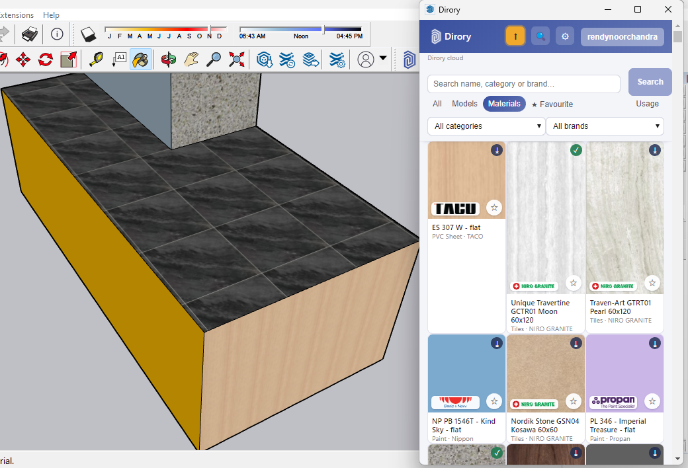
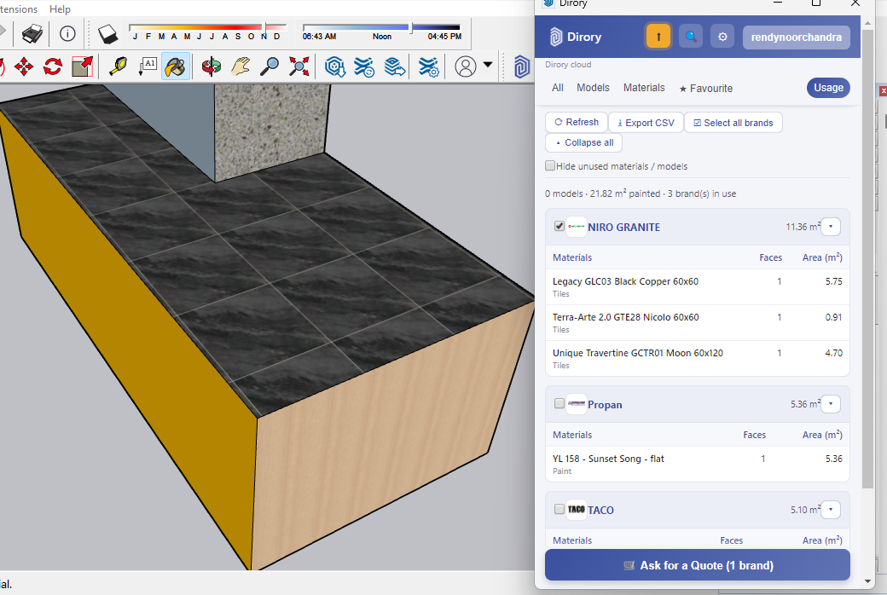

Usulan kerja sama
Dirory menempatkan produk asli produsen Indonesia di dalam SketchUp: dimensi yang tepat, dan jumlah yang bisa dihitung sendiri. Tidak ada biaya untuk arsitek — sekarang maupun nanti.
| Disiapkan untuk | Bapak Ar. Adrian Santoso, IAI Ketua · Ikatan Arsitek Indonesia — Jawa Barat |
| Tembusan | Ar. Eriko Mawanto, IAI, AA, GP Sekretaris · Ikatan Arsitek Indonesia — Jawa Barat |
| Tanggal | 13 Oktober 2026 |
| Sifat | Usulan kemitraan — tanpa biaya bagi anggota |
01 · Dua hal yang memakan waktu arsitek
Untuk memakai produk yang benar-benar dijual di Indonesia, arsitek membuka katalog PDF, situs produsen, dan grup WhatsApp — lalu memodelkannya sendiri dari nol, atau memakai bentuk umum yang mirip saja.
Akibatnya dimensi meleset, dan gambar tidak cocok dengan barang yang akan dibeli.
Berapa meter persegi keramik, berapa luasan cat, berapa unit saniter yang terpasang — dihitung manual dari gambar, lalu dituangkan lagi ke lembar perhitungan.
Pekerjaan yang berulang, mudah salah, dan tidak pernah tercatat sebagai data yang bisa dipakai kembali.
02 · Apa itu Dirory
Dirory adalah pustaka produk bangunan yang berjalan sebagai panel di dalam SketchUp. Cari, klik, dan produk masuk ke gambar — beserta dimensi yang dikirimkan produsennya.
Mencari dan memakai produk gratis. Tanpa biaya, tanpa iklan, tanpa batas jumlah pemakaian.
Produk asli produsen Indonesia: model 3D dengan dimensi, dan material untuk permukaan.
Dirory memeriksa skala dan penamaan setiap produk sebelum tayang, agar yang masuk ke gambar layak dipakai.
| Pustaka model umum | Dirory |
|---|---|
| Bentuk umum yang "mirip" | Produk yang benar-benar dijual, dengan nama merek dan tipe |
| Dimensi sering tidak akurat | Dimensi dari produsennya |
| Tidak ada hubungan dengan barang yang dibeli | Satu produk = satu SKU yang bisa dipesan |
| Tidak ada jumlah, harus dihitung manual | Luas dan unit dihitung dari gambar |
03 · Cara memakainya
Sekali saja, dari dirory.com. Ringan, dan memperbarui dirinya sendiri bila ada versi baru.
Berdasarkan nama, kategori, atau merek. Hasilnya muncul sebagai kartu berisi gambar dan nama produk.
Model ditempatkan dengan dimensi aslinya; material diambil sebagai tekstur dan langsung dipakai mengecat permukaan.
Tab Usage menghitung sendiri: berapa unit terpasang, dan berapa meter persegi material yang terpakai.
04 · Di dalam SketchUp
Panel Dirory menyaring berdasarkan kategori dan merek. Yang muncul adalah produk yang sudah tayang, lengkap dengan merek dan tipenya.

Tangkapan layar asli dari plugin Dirory yang berjalan di SketchUp.
05 · Kuantifikasi
Setiap kali sebuah model ditempatkan atau sebuah material dipakai mengecat, Dirory mencatatnya. Tab Usage menampilkan hasilnya per merek dan per material.

Untuk material: berapa meter persegi yang benar-benar terpakai — keramik, cat, HPL, dan material lembaran lain.
Untuk model: berapa buah yang masuk ke gambar — saniter, pintu, jendela, dan seterusnya.
Tangkapan layar asli: 21,82 m² terpakai dari tiga merek dalam satu file. Datanya juga bisa diekspor ke CSV.
06 · Isi pustaka hari ini
Pustaka bukan janji — katalognya sudah berjalan, dan tumbuh dari permintaan arsitek sendiri: bila sebuah produk dicari dan tidak ada, itu dicatat dan diupayakan masuk.
Cat Keramik & granit HPL Saniter Pintu & jendela Kaca & cermin Batu alam Bata & beton Rangka atap & penutup atap Langit-langit & papan Kayu Logam Wallpaper Furnitur & kabinet Pencahayaan Partisi
07 · Kenapa gratis
Pustaka produk seperti ini hanya berguna bila arsitek memakainya tanpa berpikir dua kali soal biaya. Karena itu Dirory tidak membebankan apa pun kepada arsitek — dan tidak menjual iklan di dalam panel.
| Arsitek | Produsen / merek | |
|---|---|---|
| Mencari produk | Gratis, tanpa akun | — |
| Memasukkan produk ke gambar | Gratis | — |
| Menghitung luas & unit | Gratis | — |
| Menayangkan katalog | — | Berlangganan |
| Melihat data pemakaian | — | Termasuk langganan |
08 · Usulan kerja sama
Usulan ini tidak meminta biaya, dan tidak meminta IAI menjual apa pun kepada anggotanya. Yang kami minta adalah kesempatan memperkenalkannya kepada anggota, dan masukan mereka sebagai penentu arah pengembangan pustaka.
Satu sesi daring atau tatap muka kepada anggota Jawa Barat. Durasi 30–45 menit, dengan contoh langsung di SketchUp.
Panduan memakai panel Dirory dan membaca tab Usage — termasuk cara memanfaatkan angkanya untuk perhitungan sendiri.
Produk dan kategori yang paling sering dicari tapi belum ada akan diupayakan lebih dulu. Ini jalur langsung antara anggota dan isi pustaka.
Bila IAI berkenan, kerja sama ini kami cantumkan sebagai kemitraan resmi dengan IAI Jawa Barat.
09 · Langkah selanjutnya
Kami dapat mendemonstrasikan Dirory langsung di SketchUp dalam 30 menit, memakai produk yang biasa dipakai anggota Anda.
Kami perlihatkan panel Dirory di SketchUp, cara memasukkan produk, dan cara membaca hitungan luas serta unitnya. Cukup satu laptop dengan Zoom/Meet.
Bila dirasa bermanfaat setelah demo, kami siap menyelenggarakannya untuk anggota Jawa Barat — tanpa biaya untuk IAI maupun anggota.
| +62 857-1008-6041 | |
| hello@dirory.com | |
| Situs | dirory.com |
Proposal ini disiapkan untuk Bapak Ar. Adrian Santoso, IAI — Ketua, Ikatan Arsitek Indonesia — Jawa Barat. Tembusan: Ar. Eriko Mawanto, IAI, AA, GP — Sekretaris, Ikatan Arsitek Indonesia — Jawa Barat. Tangkapan layar diambil langsung dari plugin Dirory yang berjalan di SketchUp, bukan mockup. Angka pustaka per 13 Oktober 2026.